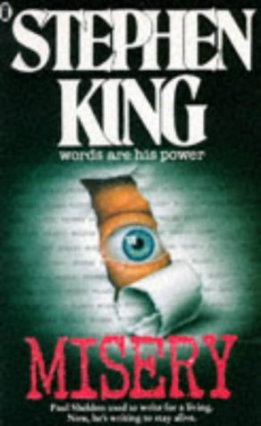

|  |
Miseryby Stephen KingMisery Chastain was dead. Paul Sheldon had just killed her - with relief, with joy. Misery had made him rich; she was the heroine of a string of bestsellers. And now he wanted to get on to some real writing. That's when the car accident happened, and he woke up in pain in a strange bed. But it wasn't the hospital. Annie Wilkes had pulled him from the wreck, brought him to her remote mountain home, splinted and set his mangled legs. The good news was that Annie was a nurse and has pain-killing drugs. The bad news was that she was Paul's Number One Fan. And when she found out what Paul had done to Misery, she didn't like it. She didn't like it at all. And now he had to bring Misery back to life. Or else . . . . |